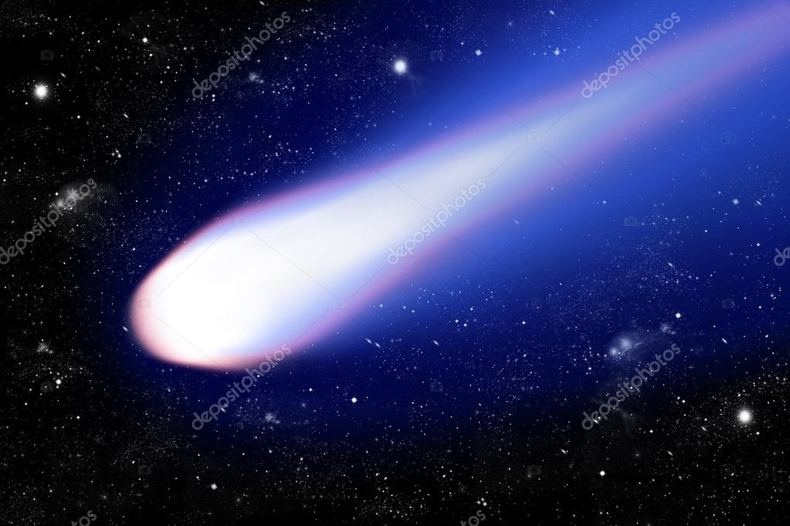
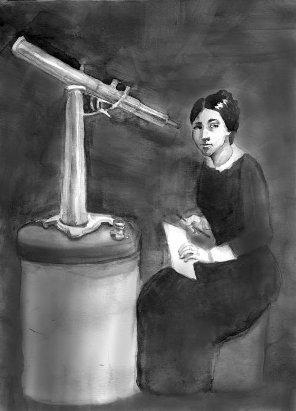

EL COMETA
Maria Winkelmann
 Scientific Women (Dominio público)Fue una astrónoma autodidacta. Descubrió el cometa en 1702, sin embargo, el crédito fue atribuido a su esposo Gottfried Kirch. Cuando él murió, la Academia de Ciencias de Berlín rechazó contatarla por ser una mujer.